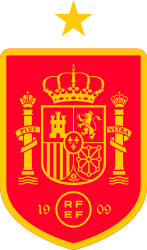
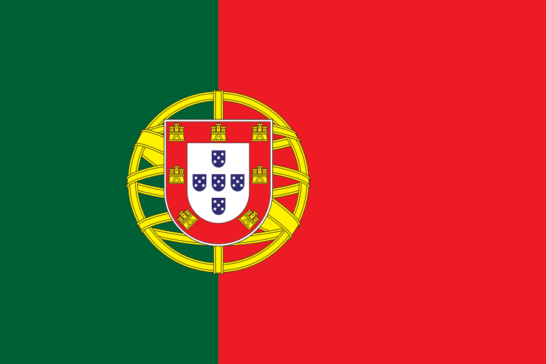
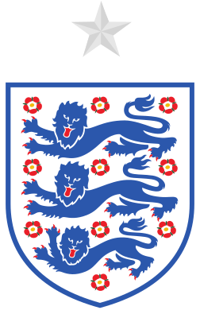

Top 5 Favourite Teams
France
- Notable players: Mbappe, Dembele, Olise, Saliba.
- Manager: Deschamps
- Winning Years: 1998, 2018
Spain

- Notable players: Yamal, Rodri, Pedri, Ferran Torres.
- Manager: De La Fuente
- Winning Years: 2010
Portugal

- Notable players: Ronaldo, Vitinha, Bruno Fernandes, Bernardo Silva.
- Manager: Roberto Martinez
- Winning Years: N/A
Argentina

- Notable players: Messi, Alvarez, Lautaro Martinez, Enzo Fernandez, Emiliano Martinez.
- Manager: Lionel Scaloni
- Winning Years: 1978, 1986, 2022
England

- Notable players: Harry Kane, Bellingham, Saka, Declan Rice.
- Manager: Thomas Tuchel
- Winning Years: 1966